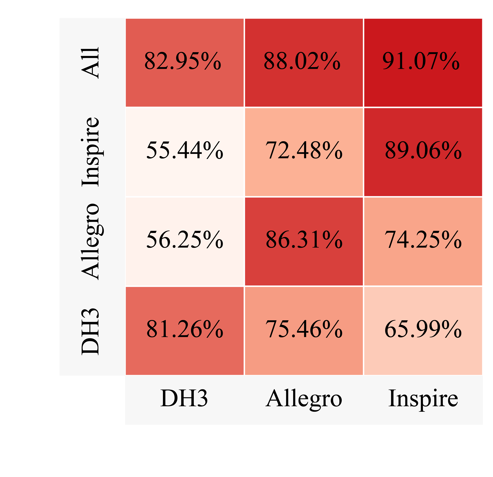

Experiment (1/6): Evaluation of the Base Policy for General Grasp Synthesis
The HOI representation (a) is inherently compact and hand-agnostic. It not only (b) improves the learning efficiency of the grasp decision model, achieving faster convergence and lower training loss, but also (c) enables joint training across different robotic hands, facilitating cross-hand generalization of the base grasp policy.


